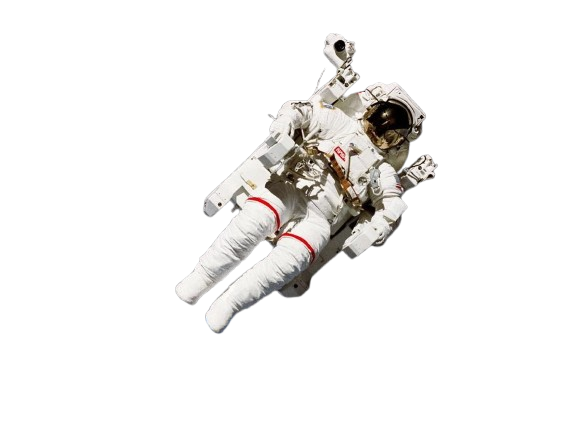
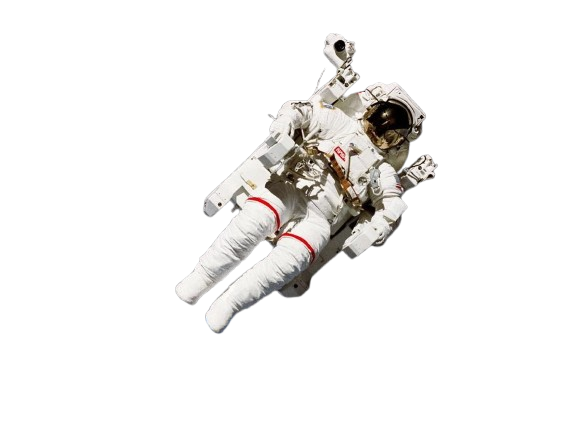
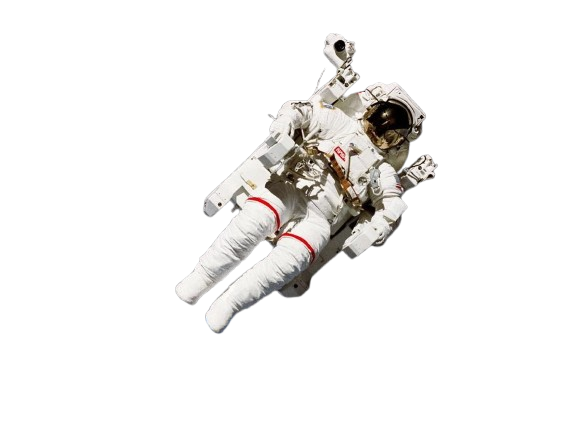
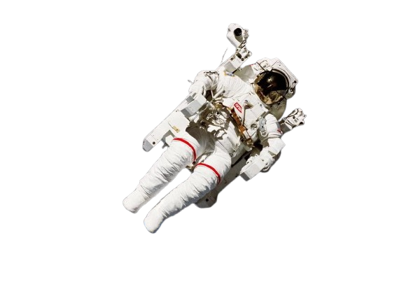

 



Apollo 11 was the United States space mission that landed the first humans on the Moon. Commander Neil Armstrong and lunar module pilot Buzz Aldrin landed the Apollo Lunar Module Eagle on July 20, 1969, at 20:17 UTC.
The mission fulfilled President Kennedy's 1961 goal of landing humans on the Moon before the end of the decade. They collected 21.5kg of lunar material and left behind scientific instruments that continue to transmit data.
"That's one small step for [a] man, one giant leap for mankind."
- Neil ArmstrongThe Voyager program consists of two robotic probes, Voyager 1 and Voyager 2, launched in 1977 to study the outer Solar System and beyond. Voyager 1 entered interstellar space in 2012, becoming the first human-made object to do so.
Each Voyager carries a Golden Record containing sounds and images selected to portray the diversity of life and culture on Earth, intended for any intelligent extraterrestrial life that might find them.
"The spacecraft will be encountered and the record played only if there are advanced spacefaring civilizations in interstellar space."
- Carl Sagan
The Hubble Space Telescope has revolutionized astronomy by providing unprecedented views of the universe. Orbiting above Earth's atmosphere, it can observe astronomical objects with minimal distortion.
Hubble has a 2.4-meter mirror and instruments that observe in the ultraviolet, visible, and near-infrared spectra. Despite initial problems with its mirror, servicing missions have kept it operational for decades.
"Hubble has given us not just pretty pictures, but profound insights into the nature of our universe."
- NASA AdministratorSee the world beyond Earth through the lens of astronomers and spacecraft. This gallery features a collection of the best images from the Hubble telescope, James Webb and other exploration missions.


Take this fun quiz to see how much you know about space